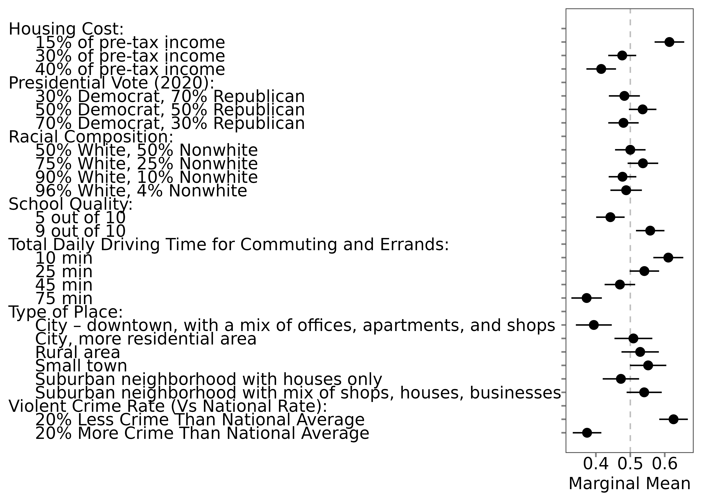
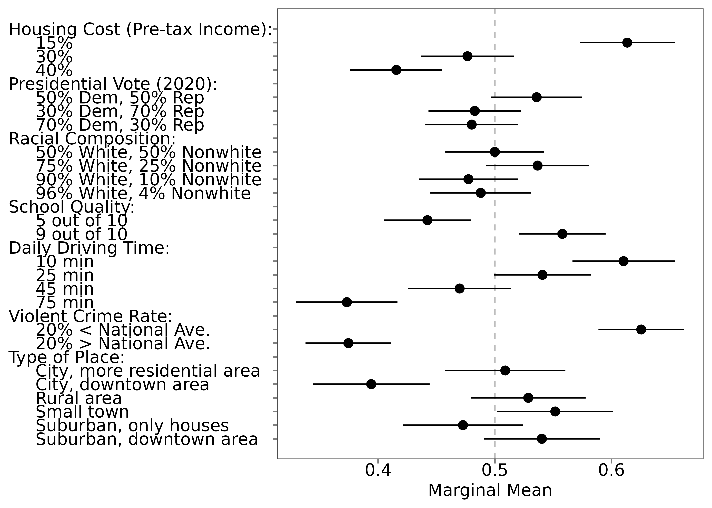

Read and Wrangle Your Data
read.Rmd📥 Read Your Data
Before you can reshape or analyze your conjoint survey data, you
first need to import it into R. In
projoint, use the read_Qualtrics()
function to quickly read properly formatted Qualtrics files.
🚀 Read Workflow
1. Export your survey responses from Qualtrics
When exporting from Qualtrics:
- Click “Download Data”.
- Choose CSV format.
- Critically, select “Use choice text” rather than coded values.
⚡ If you skip selecting “Use choice text,” your conjoint data may fail to load properly!
3. Read your CSV file into R using
read_Qualtrics()
# Example: If your file is located in a "data" folder
data <- read_Qualtrics("data/your_file.csv")Or, if using an example bundled with projoint:
# Inspect the imported data:
data## # A tibble: 518 × 218
## StartDate EndDate Status Progress
## <dttm> <dttm> <chr> <dbl>
## 1 2022-03-01 10:44:18 2022-03-01 10:44:43 IP Address 100
## 2 2022-03-01 10:44:06 2022-03-01 10:47:59 IP Address 100
## 3 2022-03-01 10:45:30 2022-03-01 10:49:03 IP Address 100
## 4 2022-03-01 10:52:18 2022-03-01 10:56:29 IP Address 100
## 5 2022-03-01 10:54:34 2022-03-01 10:57:30 IP Address 100
## 6 2022-03-01 10:56:51 2022-03-01 10:58:06 IP Address 100
## 7 2022-03-01 10:58:09 2022-03-01 11:00:45 IP Address 100
## 8 2022-03-01 11:01:43 2022-03-01 11:01:51 IP Address 100
## 9 2022-03-01 10:58:35 2022-03-01 11:03:44 IP Address 100
## 10 2022-03-01 11:00:14 2022-03-01 11:04:37 IP Address 100
## # ℹ 508 more rows
## # ℹ 214 more variables: `Duration (in seconds)` <dbl>, Finished <lgl>,
## # RecordedDate <dttm>, ResponseId <chr>, DistributionChannel <chr>,
## # UserLanguage <chr>, Q_RecaptchaScore <dbl>, Q1.2 <chr>, Q2.2 <chr>,
## # Q2.3 <chr>, Q2.4 <chr>, Q2.5 <chr>, Q2.6 <chr>, Q2.7 <chr>, Q2.8 <chr>,
## # Q2.9 <chr>, Q3.1 <chr>, Q4.2 <chr>, Q4.3 <chr>, Q4.4 <chr>, Q4.5 <chr>,
## # Q4.6 <chr>, Q4.7 <chr>, Q4.8 <chr>, Q4.9 <chr>, Q5.1 <chr>, Q6.1 <chr>, …🛠️ Wrangle Your Data
Preparing your data correctly is one of the most important steps in
conjoint analysis. Fortunately, the reshape_projoint()
function in projoint makes this easy.
🚀 Wrangle Workflow
1. Reshape Your Data
Example (Flipped Repeated Task)
outcomes <- paste0("choice", 1:8)
outcomes1 <- c(outcomes, "choice1_repeated_flipped")
out1 <- reshape_projoint(
.dataframe = exampleData1,
.outcomes = outcomes1,
.choice_labels = c("A", "B"),
.alphabet = "K",
.idvar = "ResponseId",
.repeated = TRUE,
.flipped = TRUE
)Key Arguments:
-
.outcomes: Outcome columns (include repeated task last) -
.choice_labels: Profile labels (e.g., “A”, “B”) -
.idvar: Respondent ID variable -
.alphabet: Variable prefix (“K”) -
.repeated,.flipped: If repeated task exists and is flipped
2. Variations: Repeated vs. Non-Repeated
Not-Flipped Repeated Task
outcomes <- paste0("choice", 1:8)
outcomes2 <- c(outcomes, "choice1_repeated_notflipped")
out2 <- reshape_projoint(
.dataframe = exampleData2,
.outcomes = outcomes2,
.repeated = TRUE,
.flipped = FALSE
)No Repeated Task
outcomes <- paste0("choice", 1:8)
out3 <- reshape_projoint(
.dataframe = exampleData3,
.outcomes = outcomes,
.repeated = FALSE
)3. The .fill Argument: Should You Use It?
Use .fill = TRUE to “fill” missing values based on IRR
agreement.
fill_FALSE <- reshape_projoint(
.dataframe = exampleData1,
.outcomes = outcomes1,
.fill = FALSE
)
fill_TRUE <- reshape_projoint(
.dataframe = exampleData1,
.outcomes = outcomes1,
.fill = TRUE
)Compare:
selected_vars <- c("id", "task", "profile", "selected", "selected_repeated", "agree")
fill_FALSE$data[selected_vars]## # A tibble: 6,400 × 6
## id task profile selected selected_repeated agree
## <chr> <dbl> <dbl> <dbl> <dbl> <dbl>
## 1 R_00zYHdY1te1Qlrz 1 1 1 1 1
## 2 R_00zYHdY1te1Qlrz 1 2 0 0 1
## 3 R_00zYHdY1te1Qlrz 2 1 1 NA NA
## 4 R_00zYHdY1te1Qlrz 2 2 0 NA NA
## 5 R_00zYHdY1te1Qlrz 3 1 1 NA NA
## 6 R_00zYHdY1te1Qlrz 3 2 0 NA NA
## 7 R_00zYHdY1te1Qlrz 4 1 0 NA NA
## 8 R_00zYHdY1te1Qlrz 4 2 1 NA NA
## 9 R_00zYHdY1te1Qlrz 5 1 1 NA NA
## 10 R_00zYHdY1te1Qlrz 5 2 0 NA NA
## # ℹ 6,390 more rows
fill_TRUE$data[selected_vars]## # A tibble: 6,400 × 6
## id task profile selected selected_repeated agree
## <chr> <dbl> <dbl> <dbl> <dbl> <dbl>
## 1 R_00zYHdY1te1Qlrz 1 1 1 1 1
## 2 R_00zYHdY1te1Qlrz 1 2 0 0 1
## 3 R_00zYHdY1te1Qlrz 2 1 1 NA 1
## 4 R_00zYHdY1te1Qlrz 2 2 0 NA 1
## 5 R_00zYHdY1te1Qlrz 3 1 1 NA 1
## 6 R_00zYHdY1te1Qlrz 3 2 0 NA 1
## 7 R_00zYHdY1te1Qlrz 4 1 0 NA 1
## 8 R_00zYHdY1te1Qlrz 4 2 1 NA 1
## 9 R_00zYHdY1te1Qlrz 5 1 1 NA 1
## 10 R_00zYHdY1te1Qlrz 5 2 0 NA 1
## # ℹ 6,390 more rowsTip:
- Use .fill = TRUE for small-sample or subgroup analysis
(helps increase power).
- Use .fill = FALSE (default) when in doubt for safer
estimates.
4. What If Your Data Is Already Clean?
If you already have a clean dataset, use
make_projoint_data():
out4 <- make_projoint_data(
.dataframe = exampleData1_labelled_tibble,
.attribute_vars = c(
"School Quality", "Violent Crime Rate (Vs National Rate)",
"Racial Composition", "Housing Cost",
"Presidential Vote (2020)", "Total Daily Driving Time for Commuting and Errands",
"Type of Place"
),
.id_var = "id",
.task_var = "task",
.profile_var = "profile",
.selected_var = "selected",
.selected_repeated_var = "selected_repeated",
.fill = TRUE
)Preview:
out4## <projoint_data>
## - data: 6400 rows, 13 columns
## - labels: 24 levels, 4 columns5. Arranging Attribute and Level Labels
To reorder or relabel attributes:
- Save labels:
save_labels(out1, "temp/labels_original.csv")Edit the CSV (change
order, label columns; leavelevel_iduntouched)Save it as “labels_arranged.csv” or something else.
Reload labels:
data(out1_arranged, package = "projoint")Compare using our example:


🏠 Home: Home